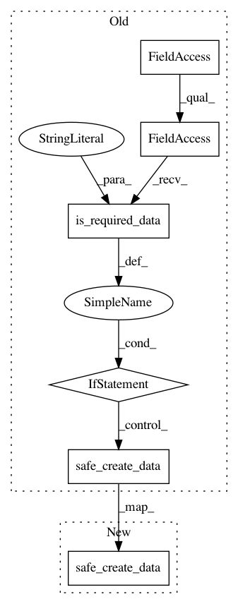

e556eaa08f9c8e1be64a694d739283235d6989b0,src/python/pants/backend/jvm/tasks/jvm_compile/jvm_compile.py,JvmCompile,_create_empty_products,#JvmCompile#,771
Before Change
self.context.products.safe_create_data("classes_by_source", make_products)
if self.context.products.is_required_data("classes_by_target"):
self.context.products.safe_create_data("classes_by_target", make_products)
if self.context.products.is_required_data("resources_by_target"):
self.context.products.safe_create_data("resources_by_target", make_products)
def _register_products(self, targets, analysis_file):
classes_by_source = self.context.products.get_data("classes_by_source")
classes_by_target = self.context.products.get_data("classes_by_target")
resources_by_target = self.context.products.get_data("resources_by_target")
After Change
// Whether or not anything else requires resources_by_target, this task
// uses it internally.
self.context.products.safe_create_data("resources_by_target", make_products)
def _resources_by_class_file(self, class_file_name, resource_mapping):
assert class_file_name.endswith(".class")
assert class_file_name.startswith(self.workdir)
In pattern: SUPERPATTERN
Frequency: 3
Non-data size: 6
Instances
Project Name: pantsbuild/pants
Commit Name: e556eaa08f9c8e1be64a694d739283235d6989b0
Time: 2014-11-19
Author: dturner@twopensource.com
File Name: src/python/pants/backend/jvm/tasks/jvm_compile/jvm_compile.py
Class Name: JvmCompile
Method Name: _create_empty_products
Project Name: pantsbuild/pants
Commit Name: d365f9119a105f45f60f850fc8921a811f1bc52a
Time: 2014-11-19
Author: dturner@twopensource.com
File Name: src/python/pants/backend/jvm/tasks/jvm_compile/jvm_compile.py
Class Name: JvmCompile
Method Name: _create_empty_products
Project Name: pantsbuild/pants
Commit Name: 34ebbe1ee710126691808d15b0e400e7dd27fc13
Time: 2015-02-14
Author: zundel@squareup.com
File Name: src/python/pants/backend/jvm/tasks/jvm_compile/jvm_compile.py
Class Name: JvmCompile
Method Name: _create_empty_products